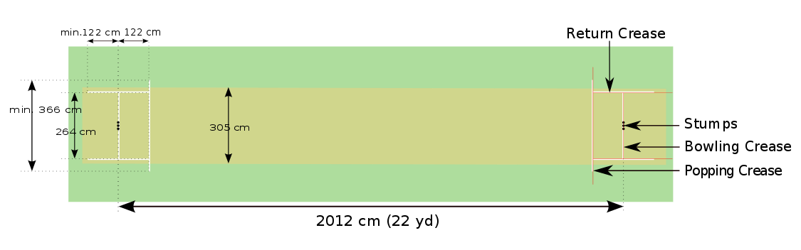

Laws & Gameplay
In cricket, the rules of the game are specified in a code called The Laws of Cricket (hereinafter called "the Laws") which has a global remit. There are 42 Laws (always written with a capital "L"). The earliest known version of the code was drafted in 1744 and, since 1788, it has been owned and maintained by its custodian, the Marylebone Cricket Club (MCC) in London.
Playing area
Cricket is a bat-and-ball game played on a cricket field (see image, right) between two teams of eleven players each. The field is usually circular or oval in shape and the edge of the playing area is marked by a boundary, which may be a fence, part of the stands, a rope, a painted line or a combination of these; the boundary must if possible be marked along its entire length.
In the approximate centre of the field is a rectangular pitch (see image, below) on which a wooden target called a wicket is sited at each end; the wickets are placed 22 yards (20 m) apart. The pitch is a flat surface 3 metres (9.8 ft) wide, with very short grass that tends to be worn away as the game progresses (cricket can also be played on artificial surfaces, notably matting). Each wicket is made of three wooden stumps topped by two bails.
As illustrated above, the pitch is marked at each end with four white painted lines: a bowling crease, a popping crease and two return creases. The three stumps are aligned centrally on the bowling crease, which is eight feet eight inches long. The popping crease is drawn four feet in front of the bowling crease and parallel to it; although it is drawn as a twelve-foot line (six feet either side of the wicket), it is in fact unlimited in length. The return creases are drawn at right angles to the popping crease so that they intersect the ends of the bowling crease; each return crease is drawn as an eight-foot line, so that it extends four feet behind the bowling crease, but is also in fact unlimited in length.
Match structure and closure
Before a match begins, the team captains (who are also players) toss a coin to decide which team will bat first and so take the first innings. Innings is the term used for each phase of play in the match. In each innings, one team bats, attempting to score runs, while the other team bowls and fields the ball, attempting to restrict the scoring and dismiss the batsmen. When the first innings ends, the teams change roles; there can be two to four innings depending upon the type of match. A match with four scheduled innings is played over three to five days; a match with two scheduled innings is usually completed in a single day. During an innings, all eleven members of the fielding team take the field, but only two members of the batting team are on the field at any given time. The order of batsmen is usually announced just before the match, but it can be varied.
The main objective of each team is to score more runs than their opponents but, in some forms of cricket, it is also necessary to dismiss all of the opposition batsmen in their final innings in order to win the match, which would otherwise be drawn. If the team batting last is all out having scored fewer runs than their opponents, they are said to have "lost by n runs" (where n is the difference between the aggregate number of runs scored by the teams). If the team that bats last scores enough runs to win, it is said to have "won by n wickets", where n is the number of wickets left to fall. For example, a team that passes its opponents' total having lost six wickets (i.e., six of their batsmen have been dismissed) have won the match "by four wickets".
In a two-innings-a-side match, one team's combined first and second innings total may be less than the other side's first innings total. The team with the greater score is then said to have "won by an innings and n runs", and does not need to bat again: n is the difference between the two teams' aggregate scores. If the team batting last is all out, and both sides have scored the same number of runs, then the match is a tie; this result is quite rare in matches of two innings a side with only 62 happening in first-class matches from the earliest known instance in 1741 until January 2017. In the traditional form of the game, if the time allotted for the match expires before either side can win, then the game is declared a draw.
If the match has only a single innings per side, then a maximum number of overs applies to each innings. Such a match is called a "limited overs" or "one-day" match, and the side scoring more runs wins regardless of the number of wickets lost, so that a draw cannot occur. If this kind of match is temporarily interrupted by bad weather, then a complex mathematical formula, known as the Duckworth-Lewis method after its developers, is often used to recalculate a new target score. A one-day match can also be declared a "no-result" if fewer than a previously agreed number of overs have been bowled by either team, in circumstances that make normal resumption of play impossible; for example, wet weather.
In all forms of cricket, the umpires can abandon the match if bad light or rain makes it impossible to continue. There have been instances of entire matches, even Test matches scheduled to be played over five days, being lost to bad weather without a ball being bowled: for example, the third Test of the 1970/71 series in Australia.
Bat and Ball
The essence of the sport is that a bowler delivers (i.e., bowls) the ball from his end of the pitch towards the batsman who, armed with a bat is "on strike" at the other end.
The bat is made of wood, usually salix alba (white willow), and has the shape of a blade topped by a cylindrical handle. The blade must not be more than four and one quarter inches wide and the total length of the bat not more than 38 inches. There is no standard for the weight which is usually between 2 lb 7 oz and 3 lb.
The ball is a hard leather-seamed spheroid, with a circumference of 22.9 centimetres (9.0 in). The ball has a "seam": six rows of stitches attaching the leather shell of the ball to the string and cork interior. The seam on a new ball is prominent, and helps the bowler propel it in a less predictable manner. During matches, the quality of the ball deteriorates to a point where it is no longer usable, and during the course of this deterioration its behaviour in flight will change and can influence the outcome of the match. Players will therefore attempt to modify the ball's behaviour by modifying its physical properties. Polishing the ball and wetting it with sweat or saliva is legal, even when the polishing is deliberately done on one side only to increase the ball's swing through the air, but the acts of rubbing other substances into the ball, scratching the surface or picking at the seam is illegal ball tampering.
Fielding
Fielding positions in cricket for a right-handed batsman Of the eleven fielders, three are in shot in the image above. The other eight are elsewhere on the field, their positions determined on a tactical basis by the captain or the bowler. Fielders often change position between deliveries, again as directed by the captain or bowler.
If a fielder is injured or becomes ill during a match, a substitute is allowed to field instead of him, but the substitute cannot bowl, act as a captain or keep wicket. The substitute leaves the field when the injured player is fit to return.
Specialist roles
The captain is often the most experienced player in the team, certainly the most tactically astute, and can possess any of the main skillsets as a batsman, a bowler or a wicket-keeper. Within the Laws, the captain has certain responsibilities in terms of nominating his players to the umpires before the match and ensuring that his players conduct themselves "within the spirit and traditions of the game as well as within the Laws".
The wicket-keeper (sometimes called simply the "keeper") is a specialist fielder subject to various rules within the Laws about his equipment and demeanour. He is the only member of the fielding side who can effect a stumping and is the only one permitted to wear gloves and external leg guards. Depending on their primary skills, the other ten players in the team tend to be classified as specialist batsmen or specialist bowlers. Generally, a team will include five or six specialist batsmen and four or five specialist bowlers, plus the wicket-keeper.
Innings
The innings (ending with 's' in both singular and plural form) is the term used for each phase of play during a match. Depending on the type of match being played, each team has either one or two innings. Sometimes all eleven members of the batting side take a turn to bat but, for various reasons, an innings can end before they have all done so. The innings terminates if the batting team is "all out", a term defined by the Laws: "at the fall of a wicket or the retirement of a batsman, further balls remain to be bowled but no further batsman is available to come in". In this situation, one of the batsman has not been dismissed and is termed not out; this is because he has no partners left and there must always be two active batsmen while the innings is in progress.
An innings may end early while there are still two not out batsmen:
- the batting team's captain may declare the innings closed even though some of his players have not had a turn to bat: this is a tactical decision by the captain, usually because he believes his team have scored sufficient runs and need time to dismiss the opposition in their innings
- the set number of overs (i.e., in a limited overs match) have been bowled
- the match has ended prematurely due to bad weather or running out of time
- in the final innings of the match, the batting side has reached its target and won the game.
Overs
The Laws state that, throughout an innings, "the ball shall be bowled from each end alternately in overs of 6 balls". The name "over" came about because the umpire calls "Over!" when six balls have been bowled. At this point, another bowler is deployed at the other end, and the fielding side changes ends while the batsmen do not. A bowler cannot bowl two successive overs, although a bowler can (and usually does) bowl alternate overs, from the same end, for several overs which are termed a "spell". The batsmen do not change ends at the end of the over, and so the one who was non-striker is now the striker and vice-versa. The umpires also change positions so that the one who was at "square leg" now stands behind the wicket at the non-striker's end and vice-versa.
Umpires and scorers
An umpire signals a decision to the scorers The game on the field is regulated by the two umpires, one of whom stands behind the wicket at the bowler's end, the other in a position called "square leg" which is about 15–20 metres away from the batsman on strike and in line with the popping crease on which he is taking guard. The umpires have several responsibilities including: adjudication on whether a ball has been correctly bowled (i.e., not a no-ball or a wide); when a run is scored; whether a batsman is out (the fielding side must first appeal to the umpire, usually with the phrase "How's that?" or "Owzat?"); when intervals start and end; and the suitability of the pitch, field and weather for playing the game. The umpires are authorised to interrupt or even abandon a match due to circumstances likely to endanger the players, such as a damp pitch or deterioration of the light.
Off the field in televised matches, there is usually a third umpire who can make decisions on certain incidents with the aid of video evidence. The third umpire is mandatory under the playing conditions for Test and Limited Overs International matches played between two ICC full member countries. These matches also have a match referee whose job is to ensure that play is within the Laws and the spirit of the game.
The match details, including runs and dismissals, are recorded by two official scorers, one representing each team. The scorers are directed by the hand signals of an umpire (see image, right). For example, the umpire raises a forefinger to signal that the batsman is out (has been dismissed); he raises both arms above his head if the batsman has hit the ball for six runs. The scorers are required by the Laws to record all runs scored, wickets taken and overs bowled; in practice, they also note significant amounts of additional data relating to the game.
A match's statistics are summarised on a scorecard. Prior to the popularisation of scorecards, most scoring was done by men sitting on vantage points cuttings notches on tally sticks and runs were originally called notches. According to Rowland Bowen, the earliest known scorecard templates were introduced in 1776 by T. Pratt of Sevenoaks and soon came into general use. It is believed that scorecards were printed and sold at Lord's for the first time in 1846.
Bowling and dismissal
Most bowlers are considered specialists in that they are selected for the team because of their skill as a bowler, although some are all-rounders and even specialist batsmen bowl occasionally. The specialist bowlers are active multiple times during an innings, but may not bowl two overs consecutively. If the captain wants a bowler to "change ends", another bowler must temporarily fill in so that the change is not immediate.
A bowler reaches his delivery stride by means of a "run-up" and an over is deemed to have begun when the bowler starts his run up for the first delivery of that over, the ball then being "in play". Fast bowlers, needing momentum, take a lengthy run up while bowlers with a slow delivery take no more than a couple of steps before bowling. The fastest bowlers can deliver the ball at a speed of over 145 kilometres per hour (90 mph) and they sometimes rely on sheer speed to try and defeat the batsman, who is forced to react very quickly. Other fast bowlers rely on a mixture of speed and guile by making use of the seam of the ball so that it "swings" (or "curves") in flight. This type of delivery can deceive a batsman into mistiming his shot so that the ball just touches the edge of the bat and can then be "caught behind" by the wicket-keeper or a slip fielder. At the other end of the bowling scale is the spin bowler who bowls at a relatively slow pace and relies entirely on guile to deceive the batsman. A spinner will often "buy his wicket" by "tossing one up" (in a slower, steeper parabolic path) to lure the batsman into making a poor shot. The batsman has to be very wary of such deliveries as they are often "flighted" or spun so that the ball will not behave quite as he expects and he could be "trapped" into getting himself out. In between the pacemen and the spinners are the medium paced seamers who rely on persistent accuracy to try and contain the rate of scoring and wear down the batsman's concentration.
There are ten ways in which a batsman can be dismissed: five relatively common and five extremely rare. The common forms of dismissal are bowled, caught, leg before wicket (lbw), run out and stumped. Rare methods are hit wicket, hit the ball twice, obstructing the field, handled the ball and timed out. The Laws state that the fielding team, usually the bowler in practice, must appeal for a dismissal before the umpire can give his decision. If the batsman is out, the umpire raises a forefinger and says "Out!"; otherwise, he will shake his head and say "Not out". There is, effectively, an eleventh method of dismissal, retired out, which is not an on-field dismissal as such but rather a retrospective one for which no fielder is credited.
Batting, runs and extras
Batsmen take turns to bat via a batting order which is decided beforehand by the team captain and presented to the umpires, though the order remains flexible, when the captain officially nominates the team. Substitute batsmen are not allowed.
A skilled batsman can use a wide array of "shots" or "strokes" in both defensive and attacking mode. The idea is to hit the ball to best effect with the flat surface of the bat's blade. If the ball touches the side of the bat it is called an "edge". The batsman does not have to play a shot and can allow the ball to go through to the wicketkeeper. Equally, he does not have to attempt a run when he hits the ball with his bat. Batsmen do not always seek to hit the ball as hard as possible, and a good player can score runs just by making a deft stroke with a turn of the wrists or by simply "blocking" the ball but directing it away from fielders so that he has time to take a run. A wide variety of shots are played, the batsman's repertoire including strokes named according to the style of swing and the direction aimed: e.g., "cut", "drive", "hook", "pull".
The batsman on strike (i.e. the "striker") must prevent the ball hitting the wicket, and try to score runs by hitting the ball with his bat so that he and his partner have time to run from one end of the pitch to the other before the fielding side can return the ball. To register a run, both runners must touch the ground behind the crease with either their bats or their bodies (the batsmen carry their bats as they run). Each completed run increments the score of both the team and the striker.
The decision to attempt a run is ideally made by the batsman who has the better view of the ball's progress, and this is communicated by calling: usually "yes", "no" or "wait". More than one run can be scored from a single hit: hits worth one to three runs are common, but the size of the field is such that it is usually difficult to run four or more. To compensate for this, hits that reach the boundary of the field are automatically awarded four runs if the ball touches the ground en route to the boundary or six runs if the ball clears the boundary without touching the ground within the boundary. In these cases the batsmen do not need to run. Hits for five are unusual and generally rely on the help of "overthrows" by a fielder returning the ball. If an odd number of runs is scored by the striker, the two batsmen have changed ends, and the one who was non-striker is now the striker. Only the striker can score individual runs, but all runs are added to the team's total.
Additional runs can be gained by the batting team as extras (called "sundries" in Australia) due to errors made by the fielding side. This is achieved in four ways: no-ball, a penalty of one extra conceded by the bowler if he breaks the rules; wide, a penalty of one extra conceded by the bowler if he bowls so that the ball is out of the batsman's reach; bye, an extra awarded if the batsman misses the ball and it goes past the wicket-keeper and gives the batsmen time to run in the conventional way; leg bye, as for a bye except that the ball has hit the batsman's body, though not his bat. If the bowler has conceded a no-ball or a wide, his team incurs an additional penalty because that ball (i.e., delivery) has to be bowled again and hence the batting side has the opportunity to score more runs from this extra ball.
“Cricket.” Wikipedia, Wikimedia Foundation, 26 Feb. 2018, en.wikipedia.org/wiki/Cricket.